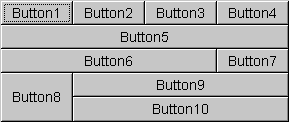
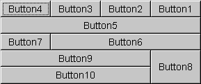

public class GridBagLayout extends Object implements LayoutManager2, Serializable
GridBagLayout类是一个灵活的布局管理器的对齐部件垂直、水平或沿基线而不需要的组件是相同的大小。每个
GridBagLayout对象维护一个动态的，矩形单元网格，每个组件占用一个或更多的细胞，称为它的显示区域。
每个组件都由一个GridBagLayout管理与GridBagConstraints实例关联的。约束对象指定一个组件的显示区域应位于网格上，以及组件如何定位在其显示区域内的位置。除了它的约束对象，该GridBagLayout也考虑构件的最小和最佳大小为确定构件的尺寸。
电网的整体取向取决于容器的ComponentOrientation财产。水平左至右方向，网格坐标（0,0）是在左上角的集装箱x向右，Y的增加而下降。水平向左方向正确，网格坐标（0,0）在右上角的集装箱x向左和Y的增加而下降。
为了有效地使用网格袋布局，你必须定制一个或更多的是与它的成分有关的GridBagConstraints对象。你定制一个GridBagConstraints对象设置一个或多个实例变量：
GridBagConstraints.gridx，
GridBagConstraints.gridy
gridx = 0，
gridy = 0。水平左向右布局，组件的领先是其左上角。对于水平右到左的布局，一个组件的领先的角落是它的右上角。使用
GridBagConstraints.RELATIVE（默认值）来指定组件被放置后立即（沿X轴或Y轴的
gridx
gridy）的成分，只是在这个组件添加添加到容器。
GridBagConstraints.gridwidth，
GridBagConstraints.gridheight
gridwidth）或列（为
gridheight）在组件的显示区域。默认值为1。使用
GridBagConstraints.REMAINDER指定组件的显示区域将从
gridx到行中的最后一个单元格（在
gridwidth）或从
gridy到最后一个单元格的列中（为
gridheight）。使用
GridBagConstraints.RELATIVE指定组件的显示区域将从
gridx到旁边的行的最后一个单元格（在
gridwidth或
gridy到旁边的一列的最后一个单元格（在
gridheight）。
GridBagConstraints.fill
GridBagConstraints.NONE（默认），
GridBagConstraints.HORIZONTAL（使其足够宽以填补其显示区域的水平，但不改变其高度），
GridBagConstraints.VERTICAL（使其足够高来填满它的显示区域的垂直，但不改变其宽度），和
GridBagConstraints.BOTH（使组件的显示区域完全填充）。
GridBagConstraints.ipadx，
GridBagConstraints.ipady
ipadx像素。同样，组件的高度至少要加
ipady像素的最小高度。
GridBagConstraints.insets
GridBagConstraints.anchor
ComponentOrientation财产而绝对值不。基线相对值计算相对于基线。有效值为：
Absolute Values |
Orientation Relative Values |
Baseline Relative Values |
|---|---|---|
|
|
|
GridBagConstraints.weightx，
GridBagConstraints.weighty
weightx）和列（
weighty），所有的组件聚集在他们容器中心。这是因为当重量是零（默认），该
GridBagLayout对象提出任何额外的空间网格和容器的边缘之间。
每行有一个基线；基线是由该行中，有一个有效的基线和基线对齐沿着确定的组件（组件的锚定值是一个BASELINE，BASELINE_LEADING或BASELINE_TRAILING）。如果行中的组件没有一个有效的基线，则该行没有基线。
如果一个组件跨行是一致的开始行的基线（如果基线调整行为是CONSTANT_ASCENT）或结束行（如果基线调整行为是CONSTANT_DESCENT）。组件对齐的行被称为当前行的行。
下图显示了一个基线布局，并包括一个跨行的组件：
CONSTANT_DESCENT基线调整行为具有BASELINE锚。作为基线调整行为是CONSTANT_DESCENT当时排小组排1。CENTER_OFFSET基线调整行为和BASELINE锚。组件定位使用基准相对值之一的一个调整大小调整不同的位置时，使用一个绝对或方向的相对值。组件如何更改取决于当前行更改的基线如何。基线锚定到显示区域的底部，如果同当时的行的任何部件有一个CONSTANT_DESCENT基线调整行为，否则基线固定在显示区域的顶部。下面的规则决定了调整大小的行为：
OTHER基线调整行为的基线可调整大小的组件只调整如果在调整大小尺寸的基线拟合显示区域内。如果基础是这样的，它不适合在显示区域中的组件是不调整。OTHER基线调整行为的基线只能成长为display height - baseline + baseline of component一样高。下面的数字显示由网格包布局管理的十个组件（所有按钮）。图2显示了一个水平的布局，左到右的容器和图3显示了一个水平，右到左的容器布局。
|  |  |
| Figure 2: Horizontal, Left-to-Right | Figure 3: Horizontal, Right-to-Left |
这十个组件的相关的GridBagConstraints对象设置为GridBagConstraints.BOTH的fill场。此外，组件有以下的非默认约束：
weightx = 1.0weightx = 1.0，gridwidth = GridBagConstraints.REMAINDERgridwidth = GridBagConstraints.REMAINDERgridwidth = GridBagConstraints.RELATIVEgridwidth = GridBagConstraints.REMAINDERgridheight = 2，weighty = 1.0gridwidth = GridBagConstraints.REMAINDER这里是实现上述示例的代码：
import java.awt.*;
import java.util.*;
import java.applet.Applet;
public class GridBagEx1 extends Applet {
protected void makebutton(String name,
GridBagLayout gridbag,
GridBagConstraints c) {
Button button = new Button(name);
gridbag.setConstraints(button, c);
add(button);
}
public void init() {
GridBagLayout gridbag = new GridBagLayout();
GridBagConstraints c = new GridBagConstraints();
setFont(new Font("SansSerif", Font.PLAIN, 14));
setLayout(gridbag);
c.fill = GridBagConstraints.BOTH;
c.weightx = 1.0;
makebutton("Button1", gridbag, c);
makebutton("Button2", gridbag, c);
makebutton("Button3", gridbag, c);
c.gridwidth = GridBagConstraints.REMAINDER; //end row
makebutton("Button4", gridbag, c);
c.weightx = 0.0; //reset to the default
makebutton("Button5", gridbag, c); //another row
c.gridwidth = GridBagConstraints.RELATIVE; //next-to-last in row
makebutton("Button6", gridbag, c);
c.gridwidth = GridBagConstraints.REMAINDER; //end row
makebutton("Button7", gridbag, c);
c.gridwidth = 1; //reset to the default
c.gridheight = 2;
c.weighty = 1.0;
makebutton("Button8", gridbag, c);
c.weighty = 0.0; //reset to the default
c.gridwidth = GridBagConstraints.REMAINDER; //end row
c.gridheight = 1; //reset to the default
makebutton("Button9", gridbag, c);
makebutton("Button10", gridbag, c);
setSize(300, 100);
}
public static void main(String args[]) {
Frame f = new Frame("GridBag Layout Example");
GridBagEx1 ex1 = new GridBagEx1();
ex1.init();
f.add("Center", ex1);
f.pack();
f.setSize(f.getPreferredSize());
f.show();
}
}
GridBagConstraints，
GridBagLayoutInfo，
ComponentOrientation，
Serialized Form
| Modifier and Type | Field and Description |
|---|---|
double[] |
columnWeights
这场拥有覆盖列权重。
|
int[] |
columnWidths
这场拥有覆盖列的最小宽度。
|
protected Hashtable<Component,GridBagConstraints> |
comptable
哈希表维护组件及其gridbag约束之间的关系。
|
protected GridBagConstraints |
defaultConstraints
本字段包含一个gridbag约束的实例包含默认值，所以如果一个组件没有gridbag约束关联的话，那么组件将被分配一个副本的
defaultConstraints。
|
protected GridBagLayoutInfo |
layoutInfo
这一领域的gridbag持有布局信息。
|
protected static int |
MAXGRIDSIZE
此字段不再用于保留数组并保持向后兼容性。
|
protected static int |
MINSIZE
由网格包布局可以布局的最小的网格。
|
protected static int |
PREFERREDSIZE
由网格包布局可以布局的首选网格大小。
|
int[] |
rowHeights
这场将覆盖到行的最小高度。
|
double[] |
rowWeights
这场将覆盖到行的权重。
|
| Constructor and Description |
|---|
GridBagLayout()
创建一个网格包布局管理器。
|
| Modifier and Type | Method and Description |
|---|---|
void |
addLayoutComponent(Component comp, Object constraints)
添加指定的组件的布局，使用指定的
constraints对象。
|
void |
addLayoutComponent(String name, Component comp)
没有效果，因为这个布局管理器不使用一个每个组件字符串。
|
protected void |
adjustForGravity(GridBagConstraints constraints, Rectangle r)
调整X，Y，宽度，和高度场的正确值取决于约束几何和垫。
|
protected void |
AdjustForGravity(GridBagConstraints constraints, Rectangle r)
这种方法已经过时了，仅用于向后兼容提供新的代码应该叫
adjustForGravity代替。
|
protected void |
arrangeGrid(Container parent)
勾画出网格。
|
protected void |
ArrangeGrid(Container parent)
这种方法已经过时了，仅用于向后兼容提供新的代码应该叫
arrangeGrid代替。
|
GridBagConstraints |
getConstraints(Component comp)
获取指定组件的约束条件。
|
float |
getLayoutAlignmentX(Container parent)
返回沿X轴的对齐方式。
|
float |
getLayoutAlignmentY(Container parent)
返回沿Y轴的对齐方式。
|
int[][] |
getLayoutDimensions()
确定布局网格的列宽度和行高度。
|
protected GridBagLayoutInfo |
getLayoutInfo(Container parent, int sizeflag)
填写
GridBagLayoutInfo实例管理孩子的当前设置。
|
protected GridBagLayoutInfo |
GetLayoutInfo(Container parent, int sizeflag)
这种方法已经过时了，仅用于向后兼容提供新的代码应该叫
getLayoutInfo代替。
|
Point |
getLayoutOrigin()
确定布局区域的原点，在目标容器的图形坐标空间中。
|
double[][] |
getLayoutWeights()
确定布局网格的列和行的权重。
|
protected Dimension |
getMinSize(Container parent, GridBagLayoutInfo info)
指出了基于
getLayoutInfo信息掌握的最小尺寸。
|
protected Dimension |
GetMinSize(Container parent, GridBagLayoutInfo info)
这种方法已经过时了，仅用于向后兼容提供新的代码应该叫
getMinSize代替。
|
void |
invalidateLayout(Container target)
无效的布局，表明如果布局管理器已缓存的信息应该被丢弃。
|
void |
layoutContainer(Container parent)
使用此网格包布局布局指定指定的容器。
|
Point |
location(int x, int y)
确定哪些细胞布局网格包含指定的
(x, y)点。
|
protected GridBagConstraints |
lookupConstraints(Component comp)
检索指定组件的约束。
|
Dimension |
maximumLayoutSize(Container target)
返回给定目标容器中的组件的这个布局的最大尺寸。
|
Dimension |
minimumLayoutSize(Container parent)
决定使用此网格袋布局
parent容器的最小尺寸。
|
Dimension |
preferredLayoutSize(Container parent)
决定使用此网格袋布局
parent容器首选大小。
|
void |
removeLayoutComponent(Component comp)
从该布局中移除指定的组件。
|
void |
setConstraints(Component comp, GridBagConstraints constraints)
在该布局中设置指定组件的约束条件。
|
String |
toString()
返回这个网格包布局的值的字符串表示形式。
|
protected static final int MAXGRIDSIZE
protected static final int MINSIZE
protected static final int PREFERREDSIZE
protected Hashtable<Component,GridBagConstraints> comptable
comptable键部件和价值观是
GridBagConstraints实例。
GridBagConstraints
protected GridBagConstraints defaultConstraints
defaultConstraints。
protected GridBagLayoutInfo layoutInfo
layoutInfo是
null这表明在gridbag或者有无成分组成，他们尚未得到验证。
public int[] columnWidths
null值在所有的最小列宽度进行了计算应用于gridbag。如果columnwidths比列数更多的元素，列添加到gridbag匹配元素ColumnWidth数。
getLayoutDimensions()
public int[] rowHeights
null值在所有的最小行高计算已应用于gridbag。如果
rowHeights比行数更多的元素，行添加到gridbag匹配元素在
rowHeights数。
getLayoutDimensions()
public double[] columnWeights
null值在所有的栏目权重计算已应用于gridbag。如果我
columnWeights[i] >重列，然后列我是
columnWeights[i]分配权重。如果
columnWeights比列数更多的元素，多余的元素将被忽略，他们不会引起更多的列被创建。
public double[] rowWeights
null值在所有的行的权重进行了计算应用于gridbag。如果行我
rowWeights[i] >的重量，然后行我是
rowWeights[i]分配权重。如果
rowWeights比行数更多的元素，多余的元素将被忽略，他们不会引起更多的行被创造。
public void setConstraints(Component comp, GridBagConstraints constraints)
comp -要修改的组件
constraints -适用的限制
public GridBagConstraints getConstraints(Component comp)
GridBagConstraints对象返回。
comp -要查询的组件
protected GridBagConstraints lookupConstraints(Component comp)
GridBagConstraints对象。
如果comp不在GridBagLayout，一组默认GridBagConstraints返回。一个null comp值无效，返回null。
comp -要查询的组件
public Point getLayoutOrigin()
ComponentOrientation价值。这是不同于由细胞给出了网格坐标原点（0,0）。大多数应用程序不直接调用此方法。
ComponentOrientation
public int[][] getLayoutDimensions()
大多数应用程序不直接调用此方法。
public double[][] getLayoutWeights()
大多数应用程序不直接调用此方法。
public Point location(int x, int y)
(x, y)点。每个单元格是由它的列索引（从0到列的数目减去1）和它的行索引（从0到行数减1）。
如果(x, y)点之外的网格，使用下列规则。列的索引返回为零，如果x谎言为从左到右的容器或容器为右向左布局布局的左右。列指数为列数返回如果x躺在右边在从左到右的容器或左从右到左的容器。的行的索引返回为零，如果y之上的布局，和行数如果y低于布局。一个容器的定位是由它的性质所决定ComponentOrientation。
x -一点nullx坐标
y -一点nully坐标
ComponentOrientation
public void addLayoutComponent(String name, Component comp)
addLayoutComponent 接口
LayoutManager
name要与组件关联的字符串
comp -要添加的组件
public void addLayoutComponent(Component comp, Object constraints)
constraints对象。注意，约束是可变的，因此，当缓存克隆。
addLayoutComponent 接口
LayoutManager2
comp -要添加的组件
constraints -一个对象，决定了该组件被添加到布局
IllegalArgumentException -如果
constraints不是
GridBagConstraint
public void removeLayoutComponent(Component comp)
大多数应用程序不直接调用此方法。
removeLayoutComponent 接口
LayoutManager
comp -要移除的组件。
Container.remove(java.awt.Component)，
Container.removeAll()
public Dimension preferredLayoutSize(Container parent)
parent容器首选大小。
大多数应用程序不直接调用此方法。
preferredLayoutSize 接口
LayoutManager
parent -其中的容器来做布局
parent首选大小的容器
Container.getPreferredSize()
public Dimension minimumLayoutSize(Container parent)
parent容器的最小尺寸。
大多数应用程序不直接调用此方法。
minimumLayoutSize 接口
LayoutManager
parent -其中的容器来做布局
parent容器的最小尺寸
Container.doLayout()
public Dimension maximumLayoutSize(Container target)
maximumLayoutSize 接口
LayoutManager2
target -需要摆放的集装箱
Container，
minimumLayoutSize(Container)，
preferredLayoutSize(Container)
public float getLayoutAlignmentX(Container parent)
getLayoutAlignmentX 接口
LayoutManager2
0.5f指示中心
public float getLayoutAlignmentY(Container parent)
getLayoutAlignmentY 接口
LayoutManager2
0.5f指示中心
public void invalidateLayout(Container target)
invalidateLayout 接口
LayoutManager2
public void layoutContainer(Container parent)
GridBagLayout对象的约束。
大多数应用程序不直接调用此方法。
layoutContainer 接口
LayoutManager
parent -其中的容器来做布局
Container，
Container.doLayout()
public String toString()
protected GridBagLayoutInfo getLayoutInfo(Container parent, int sizeflag)
GridBagLayoutInfo实例管理孩子的当前设置。这就要求三通过儿童组：
此方法只能由GridBagLayout内部使用。
parent的布局容器
sizeflag -
PREFERREDSIZE或
MINSIZE
GridBagLayoutInfo
protected GridBagLayoutInfo GetLayoutInfo(Container parent, int sizeflag)
protected void adjustForGravity(GridBagConstraints constraints, Rectangle r)
GridBagLayout内部使用。
constraints -适用的限制
r -
Rectangle进行调整
protected void AdjustForGravity(GridBagConstraints constraints, Rectangle r)
protected Dimension getMinSize(Container parent, GridBagLayoutInfo info)
getLayoutInfo信息掌握的最小大小。此方法只能由
GridBagLayout内部使用。
parent的布局容器
info -这父布局信息
Dimension对象
protected Dimension GetMinSize(Container parent, GridBagLayoutInfo info)
protected void arrangeGrid(Container parent)
GridBagLayout内部使用。
parent的布局容器
protected void ArrangeGrid(Container parent)
Submit a bug or feature
For further API reference and developer documentation, see Java SE Documentation. That documentation contains more detailed, developer-targeted descriptions, with conceptual overviews, definitions of terms, workarounds, and working code examples.
Copyright © 1993, 2014, Oracle and/or its affiliates. All rights reserved.